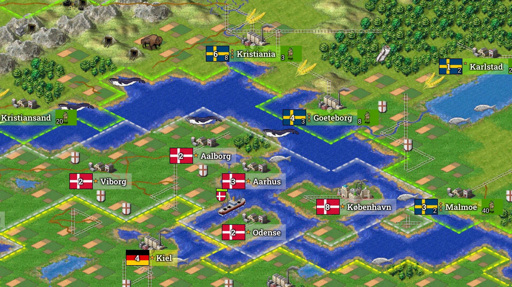
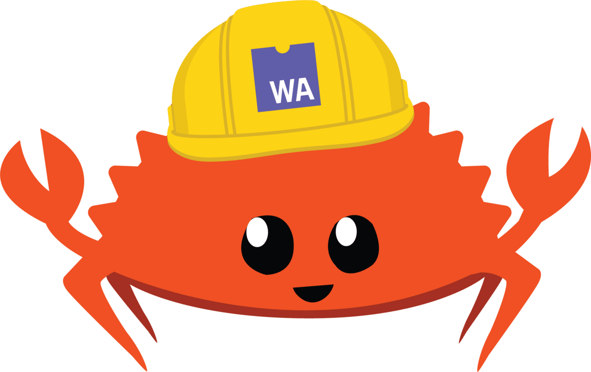
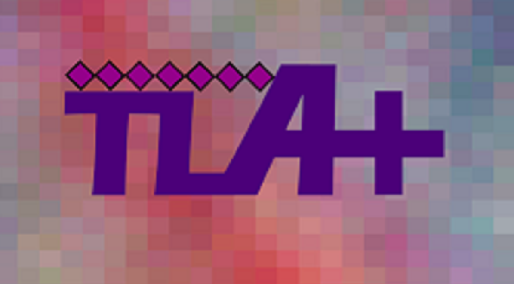
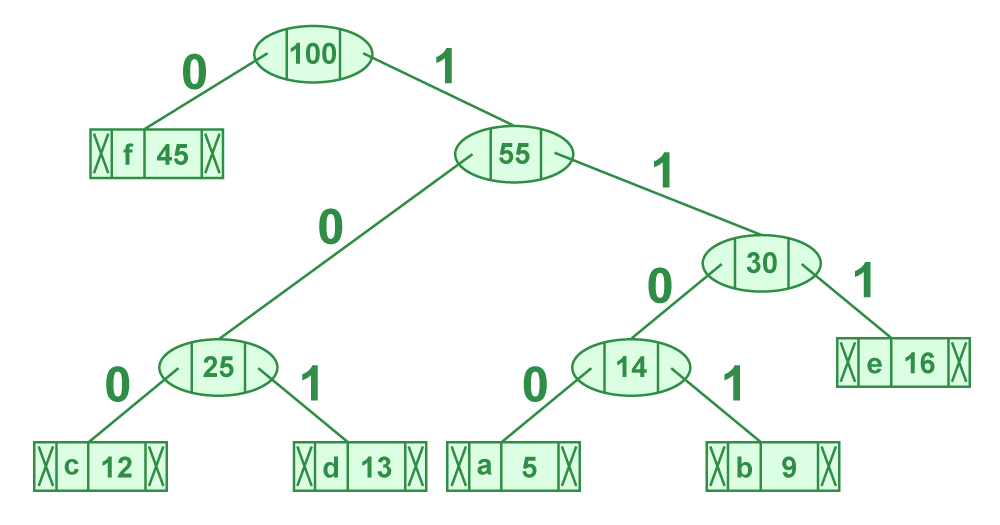
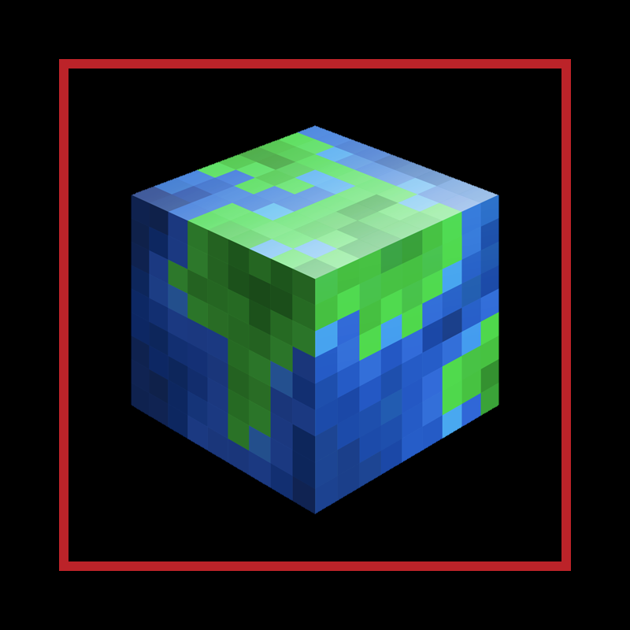

Welcome to Willmo3's Website!
👓 About Me
Hello! I'm Will Morris, a CS Ph.D. student at Georgia Tech advised by Dr. Jacob Laurel. I research strategies for verifying correctness properties of scientific programs at scale.
Currently, I'm building a new verification framework for nonlinear, multidimensional hyperbolic PDEs. My artifacts include the verified PDE solver PDEnclose and the numeric program analysis suite DiffDomain.
If you'd like to discuss how formal methods are evolving to support scientific computing and machine learning, feel free to email me at wmorris49@gatech.edu!
Outside of work, I enjoy the finer things in life, like Minecraft, Freeciv, and Legos. I also like to touch grass with walks and hikes!
Projects

I run the Williserver Minecraft server, along with a suite of accompanying plugins and scripts.
As an aside, this website is named for the eponymous Minecraft server!

Over Covid, I started playing a Civ2 clone called Freeciv with my friends.
Now I've got a whole collection of Freeciv utilities called "Beeciv"!

Walc is a multiplatform programming language built to test the performance of an interpreter run on WebAssembly. CLI and web frontends are supported!
HPCarver is a C++ implementation of seam carving, a dynamic programming algorithm for image resizing.
This artifact compares LLNL's RAJA performance portability with other parallelization libraries, such as CUDA and OpenMP.
FaultCrosser is a tool for automatically calculating the robustness of fault-centered TLA+ libraries.
It reports the maximal combinations of faults a TLA+ model is robust against!

RobustNet models synchronous, partially synchronous, and asynchronous network channels in TLA+.
It includes faults for synchronous networks that are compatible with FaultCrosser!

Over winter break, I built a Huffman compressor in Rust. It was a bit of a journey!

Tiers is a Minecraft plugin for dynamically expanding world borders in 'tiers'.
NameSet selects a personal Lego set based on your name.